Sight Word Practice Pages Read It, Trace It, Write It — All 92 Dolch Words
Free sight word practice pages for ages 5 to 7: every word from the pre-primer and primer lists gets read, traced and written by hand. The 12 sheets match the flashcard sets word for word and sheet for sheet, so a new set of words can be introduced and practiced on the same day. Print at home, no signup.
Last updated: October 21, 2026
⚡ Quick Answer
These free sight word practice pages cover all 92 Dolch pre-primer and primer words across 12 printable sheets — the same words, in the same order, as the flashcards on the sight words page. On every sheet your child reads each word, traces it in light gray, then writes it on a line from memory. Made for ages 5 to 7.
At a Glance
- Skill: Sight word reading, tracing and writing
- Ages: 5–7 (kindergarten–grade 1)
- Sheets: 12 (5 pre-primer + 7 primer)
- Words: All 92 Dolch pre-primer & primer words
- Matches: The flashcard sheets on the sight words page, sheet for sheet
- Cost: Free — print at home
🔤 Pre-Primer Practice Sheets
The first 40 words a young reader meets — a, the, I, see, my — practiced the slow, sticky way: eyes, then pencil, then memory. Tracing gives small hands the shape of each word before they have to produce it, and the write-it line right beside the trace turns copying into remembering one word at a time.
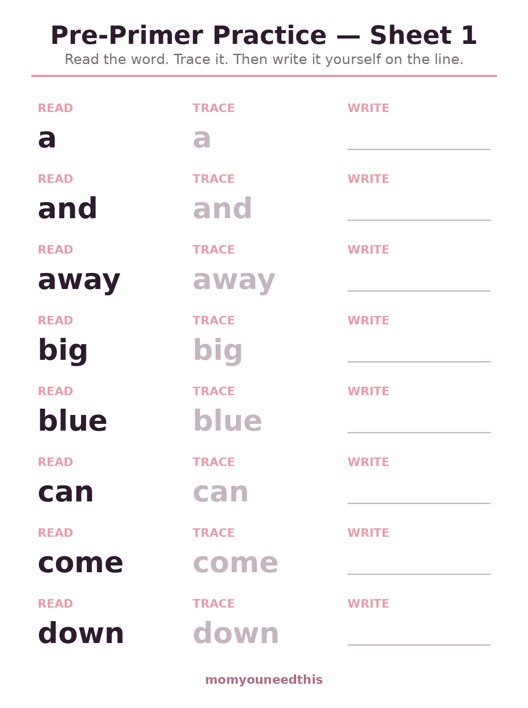
🔤 Download Your Free Pre-Primer Practice — Sheet 1
Sheet 1: a, and, away, big, blue, can, come, down — read it, trace it, write it.
⬇️ Download Free Practice Sheet 🖨️ Print🎁 Free printable for ages 5–7
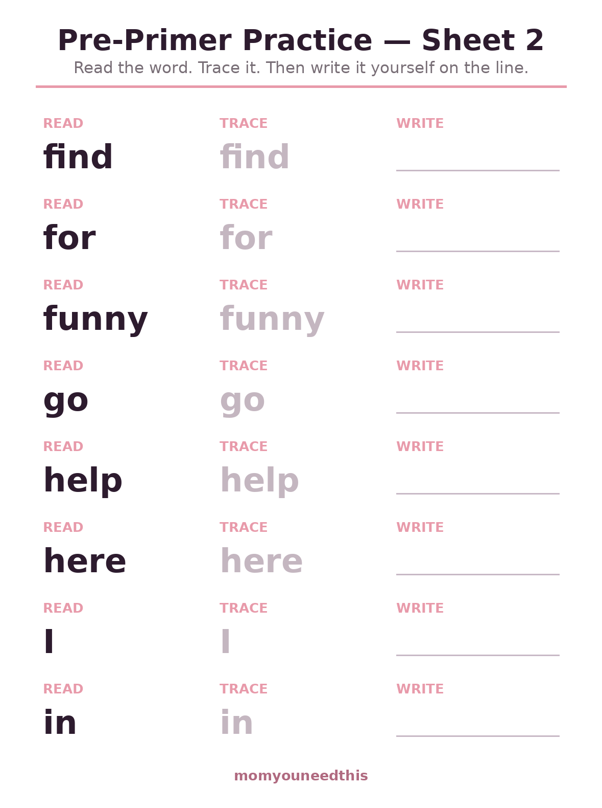
🔤 Download Your Free Pre-Primer Practice — Sheet 2
Sheet 2: find, for, funny, go, help, here, I, in — read it, trace it, write it.
⬇️ Download Free Practice Sheet 🖨️ Print🎁 Free printable for ages 5–7
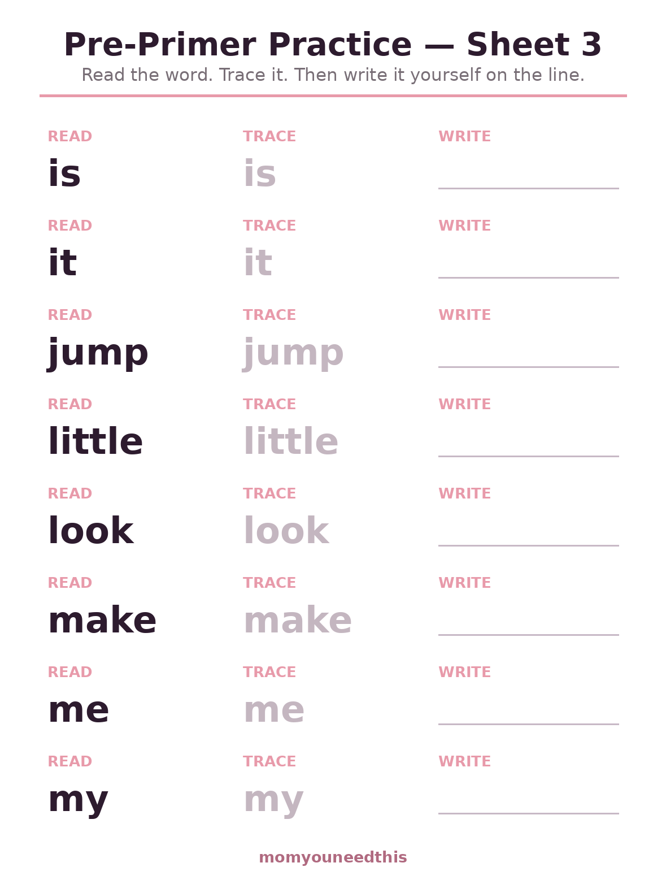
🔤 Download Your Free Pre-Primer Practice — Sheet 3
Sheet 3: is, it, jump, little, look, make, me, my — read it, trace it, write it.
⬇️ Download Free Practice Sheet 🖨️ Print🎁 Free printable for ages 5–7
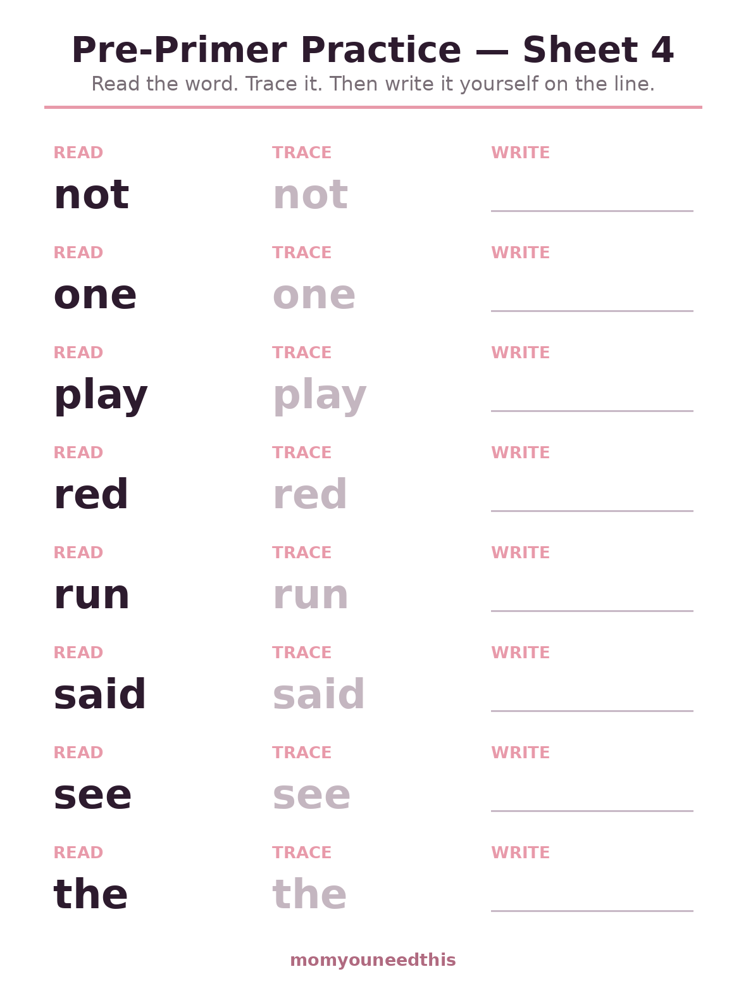
🔤 Download Your Free Pre-Primer Practice — Sheet 4
Sheet 4: not, one, play, red, run, said, see, the — read it, trace it, write it.
⬇️ Download Free Practice Sheet 🖨️ Print🎁 Free printable for ages 5–7
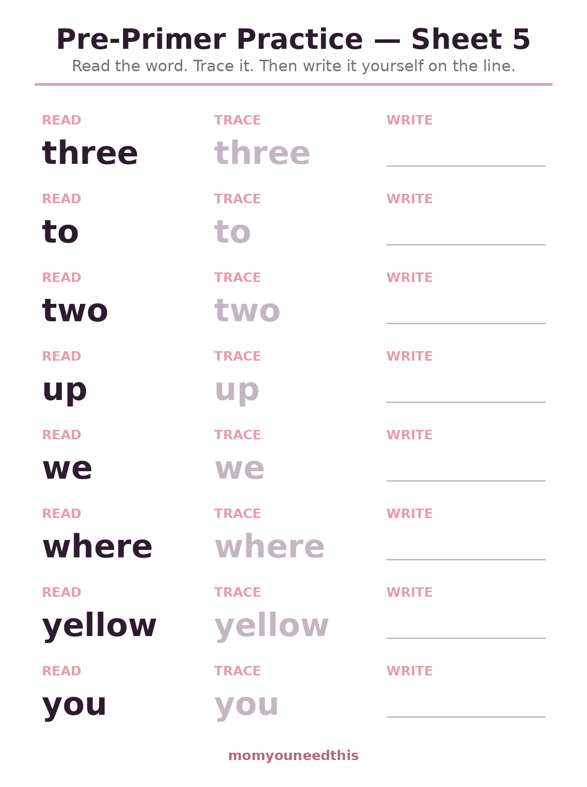
🔤 Download Your Free Pre-Primer Practice — Sheet 5
Sheet 5: three, to, two, up, we, where, yellow, you — read it, trace it, write it.
⬇️ Download Free Practice Sheet 🖨️ Print🎁 Free printable for ages 5–7
📚 Primer Practice Sheets
The next 52 words — all, have, like, please, there — are the ones that turn flashcard knowledge into real reading, because they appear on nearly every page of an early reader. Same routine as the pre-primer sheets: read, trace, write. The last sheet holds just four words and finishes with space to use a favorite word in a sentence of their own.
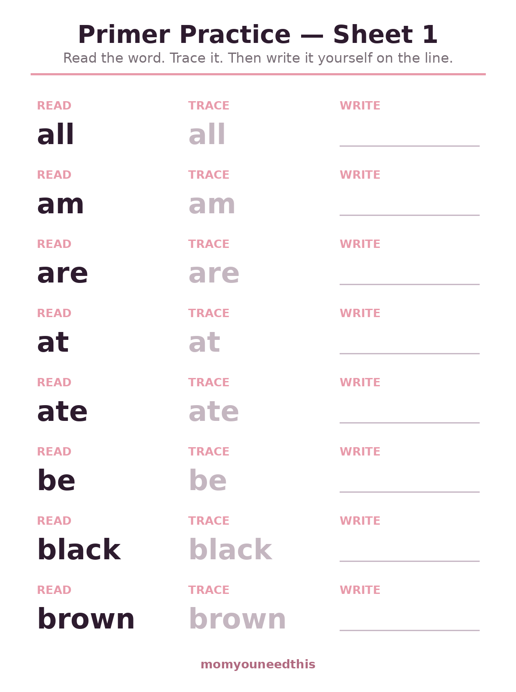
📚 Download Your Free Primer Practice — Sheet 1
Sheet 1: all, am, are, at, ate, be, black, brown — read it, trace it, write it.
⬇️ Download Free Practice Sheet 🖨️ Print🎁 Free printable for ages 5–7
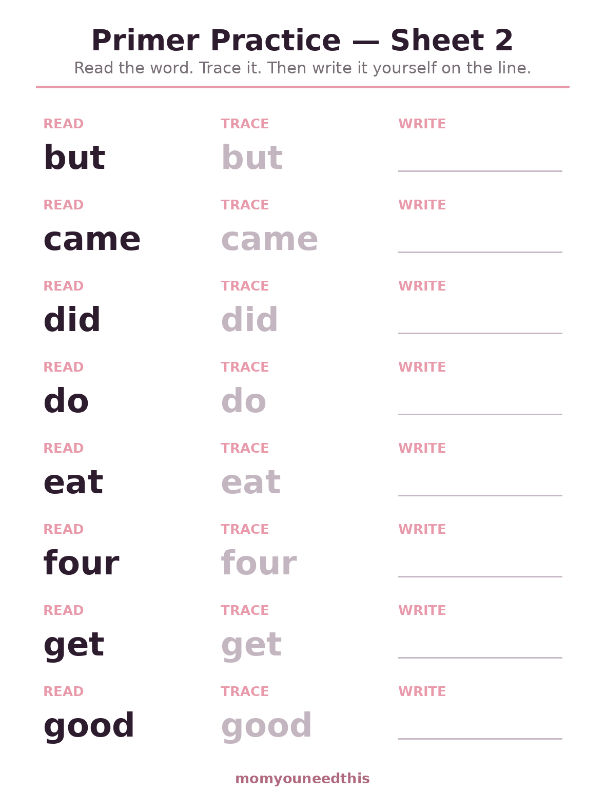
📚 Download Your Free Primer Practice — Sheet 2
Sheet 2: but, came, did, do, eat, four, get, good — read it, trace it, write it.
⬇️ Download Free Practice Sheet 🖨️ Print🎁 Free printable for ages 5–7
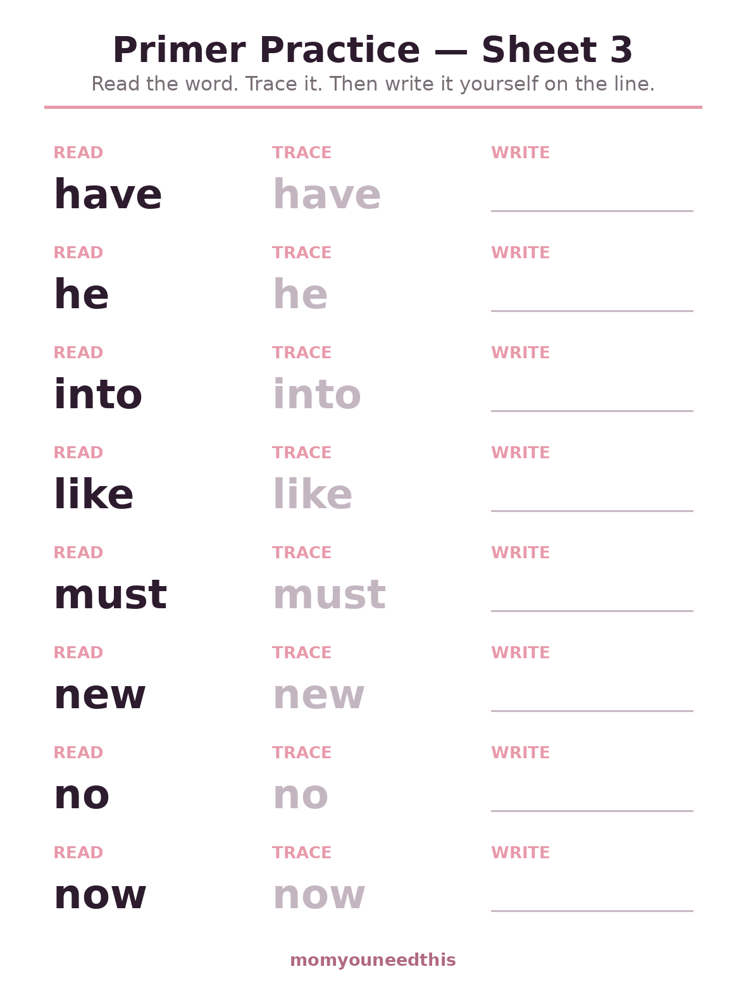
📚 Download Your Free Primer Practice — Sheet 3
Sheet 3: have, he, into, like, must, new, no, now — read it, trace it, write it.
⬇️ Download Free Practice Sheet 🖨️ Print🎁 Free printable for ages 5–7
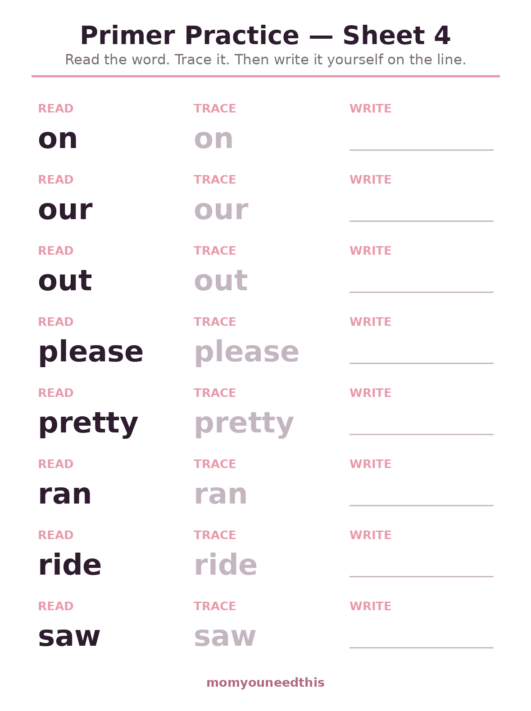
📚 Download Your Free Primer Practice — Sheet 4
Sheet 4: on, our, out, please, pretty, ran, ride, saw — read it, trace it, write it.
⬇️ Download Free Practice Sheet 🖨️ Print🎁 Free printable for ages 5–7
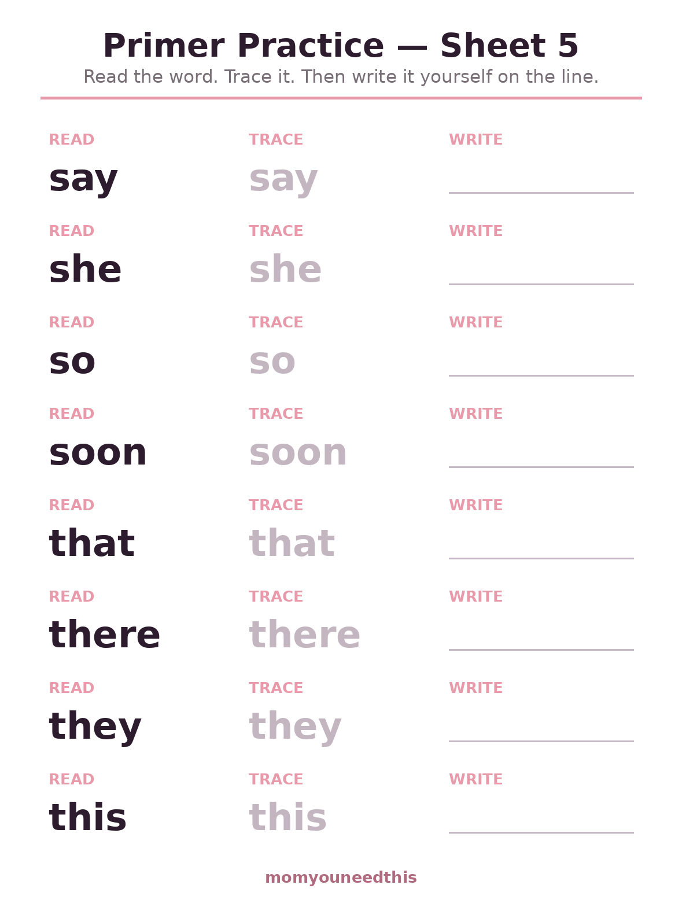
📚 Download Your Free Primer Practice — Sheet 5
Sheet 5: say, she, so, soon, that, there, they, this — read it, trace it, write it.
⬇️ Download Free Practice Sheet 🖨️ Print🎁 Free printable for ages 5–7
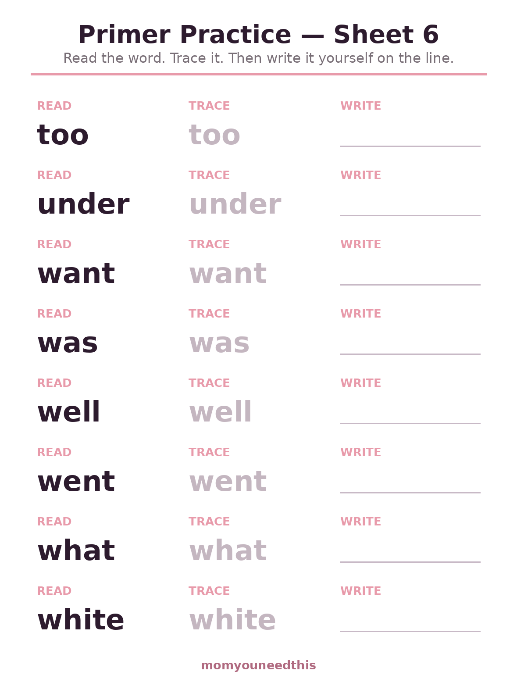
📚 Download Your Free Primer Practice — Sheet 6
Sheet 6: too, under, want, was, well, went, what, white — read it, trace it, write it.
⬇️ Download Free Practice Sheet 🖨️ Print🎁 Free printable for ages 5–7
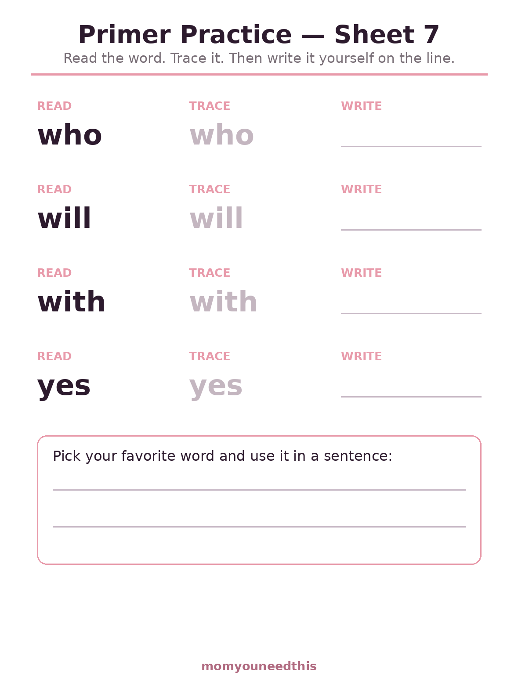
📚 Download Your Free Primer Practice — Sheet 7
Sheet 7: who, will, with, yes — read it, trace it, write it.
⬇️ Download Free Practice Sheet 🖨️ Print🎁 Free printable for ages 5–7
🌱 Why Writing Beats Tapping
An app can flash a word a hundred times and a child can still meet it blankly in a book, because recognition on a screen is shallow. Writing forces the slow work: letter by letter, in order, with a hand that has to know what comes next. That effort is the learning. Pair one practice sheet with its matching flashcards — cards first for the quick win, pencil second for the keeping.
🖨️ How to Use These Worksheets
- Match the pair. Print the practice sheet and the flashcard sheet with the same number from the sight words page — same eight words, two kinds of practice.
- Say it while tracing. Reading the word aloud as the pencil moves it links sound, sight and hand in one pass.
- Cover and write. On the second round, cover the trace column with a hand and write from memory, then peek to check.
- Stop at one sheet. Eight words written carefully beats twenty-four rushed. Reprint the same sheet in a few days instead.
🗺️ What's Next?
Practice pairs with recognition — keep both going:
❓ Sight Word Practice Pages FAQ
What is the difference between flashcards and practice pages?
Flashcards teach recognition — seeing the word and knowing it instantly. These practice pages add the pencil: your child reads each word, traces it, then writes it from memory. Writing a word by hand is one of the strongest ways to fix its spelling in memory.
Which list should my child start with?
The pre-primer list — it holds the 40 most common first words (a, the, I, see, my). When those five sheets feel easy, move to the primer sheets, which add 52 more. The order matches the flashcard sets on the sight words page exactly.
How many words should a child practice at once?
One sheet of eight words is a full session for most 5- to 7-year-olds. Little and often beats a marathon: the same sheet reprinted next week, with the words now familiar, does more than three new sheets in one sitting.
Do these sheets match the flashcards?
Yes — sheet 1 here holds the same eight words as flashcard sheet 1, in the same order, for both lists. Print the matching pair and a new set of words gets introduced and practiced together.
Are these sight word practice pages free?
Yes — all 12 practice sheets are free to print at home, with no signup and no email.